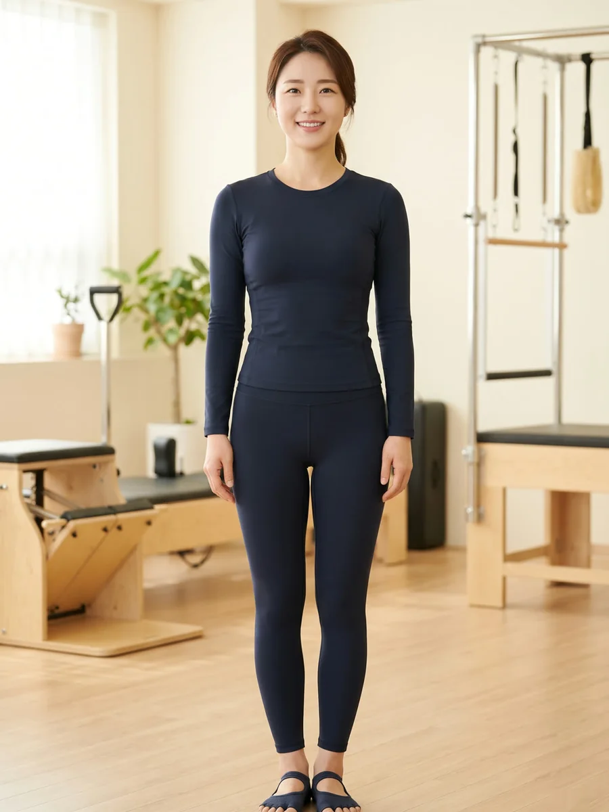
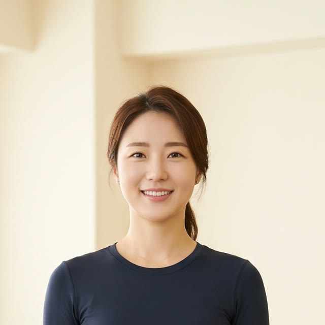
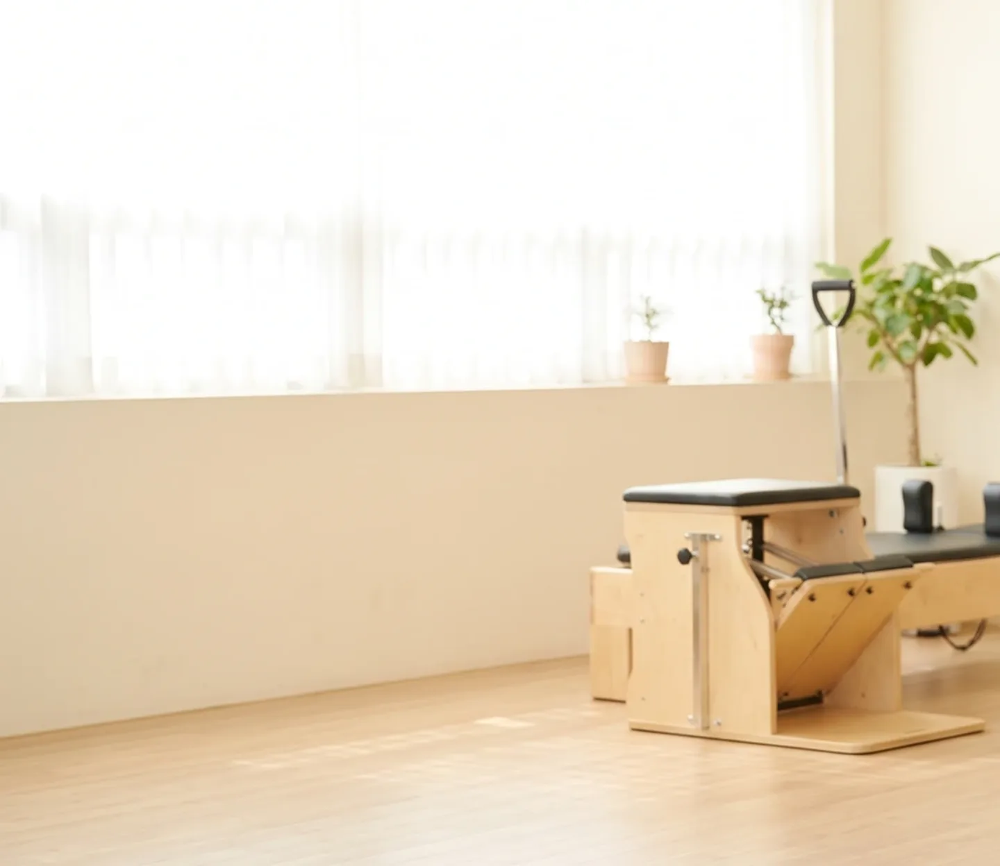

하루 여덟 시간을 앉아서 일합니다
오후가 되면 허리가 무겁고, 퇴근하면 어깨가 굳어 있습니다. 통증이 나타난 동작보다 하루의 자세를 먼저 봅니다.
SEOUL · SEONGSU1:1 개인 레슨
2018년부터 1:1 개인 레슨만 해왔습니다. 지금은 성수동 스튜디오에서 수업합니다. 첫 수업에서 앉는 자세와 걷는 모습, 호흡을 40분 동안 살피고, 그 기록으로 수업을 짭니다. 운동이 처음이거나 통증이 있어도 시작할 수 있습니다.

01 WHO IT IS FOR
상담에서 가장 자주 듣는 네 가지입니다. 어디에 해당하든 첫 수업에서 확인할 것은 같습니다.
오후가 되면 허리가 무겁고, 퇴근하면 어깨가 굳어 있습니다. 통증이 나타난 동작보다 하루의 자세를 먼저 봅니다.
동작을 따라 하지 못할까 봐 미뤄 두셨다면, 첫 8주는 기본 동작 여섯 개로 시작합니다. 설명을 듣고 혼자 해볼 시간을 충분히 드립니다.
진단과 치료는 병원의 몫입니다. 저는 치료에 무리가 되지 않는 범위에서 움직임을 정리합니다. 주치의 소견이 있으면 먼저 확인합니다.
숫자보다 골반과 어깨의 균형을 봅니다. 변화는 같은 각도에서 찍은 사진과 관절 가동 범위 기록으로 확인합니다.

02 INSTRUCTOR
필라테스를 시작한 건 사무직으로 일하던 서른 무렵이었습니다. 하루 종일 앉아 지내다 목이 돌아가지 않아 병원에 갔고, 원인은 운동 부족이 아니라 자세라는 말을 들었습니다. 그때부터 매트 위에서 제 몸을 관찰하기 시작했습니다.
2018년 매트 지도자 과정을, 2021년 리포머 과정을 마쳤습니다. 그 뒤로는 단체 수업보다 개인 레슨을 택했습니다. 한 사람의 몸은 같은 동작으로도 다르게 반응하고, 그 차이를 보려면 한 번에 한 명을 봐야 한다고 생각하기 때문입니다.
수업에서 가장 오래 하는 일은 설명입니다. 어디에서 힘이 들어가고 어디가 늘어나야 하는지 알면 집에서도 혼자 할 수 있게 됩니다. 제 손이 없어도 몸을 다룰 수 있게 되는 것, 그게 제가 생각하는 수업의 끝입니다.
자격
경력

03 THE STUDIO
기구는 리포머 두 대와 체어 한 대, 매트 공간은 따로 있습니다. 수업이 겹치지 않아 다른 회원과 마주치지 않고, 기구 세팅도 매번 회원님 몸에 맞춥니다.
위치·운영 시간은 샘플용 예시입니다. 실제 사이트에서는 강사님의 운영 정보로 바뀝니다.
04 PROGRAM
세 가지 중에서 고르시면 됩니다. 어느 쪽이 맞을지는 첫 상담에서 함께 정합니다.
FOUNDATION · 8 WEEKS
필라테스가 처음인 분
체형 진단으로 시작해 기본 동작 여섯 개를 8주에 나눠 익힙니다. 마지막 주에는 집에서 할 수 있는 15분 루틴을 정리해 드립니다. 설명을 듣고 직접 해보는 시간이 길어, 운동 경험이 없을수록 수업이 수월합니다.
POSTURE · 1:1
목·어깨·허리가 굳은 직장인
앉은 자세에서 굳은 부위를 풀고, 서 있을 때의 무게 중심을 다시 잡습니다. 4주마다 같은 각도에서 사진을 찍고 가동 범위를 재측정해, 무엇이 달라졌는지 눈으로 확인합니다.
REFORMER · 1:1
기구로 더 정교하게 다지고 싶은 분
스프링 저항으로 약한 근육을 깨우고, 매트에서 잡은 정렬을 강도 있게 반복합니다. 무릎과 허리에 부담이 적어 재활을 병행하는 회원님이 많습니다.
금액은 예시입니다. 8회·12회 결제 시 할인과 환불 규정은 상담에서 안내합니다.
05 HOW IT WORKS
첫 상담부터 4주 점검까지, 무엇을 하는지 미리 알고 오시면 됩니다.
통증 이력과 하루 생활, 목표를 확인합니다. 병원 치료 중이라면 주치의 소견을 먼저 여쭙습니다.
서기·앉기·걷기를 사진으로 남기고 관절 가동 범위를 기록합니다. 이 기록이 8주 뒤의 비교 기준이 됩니다.
50분 수업 뒤 10분은 정리와 질문 시간입니다. 수업이 끝나면 그날 한 내용을 카카오톡으로 보내 드립니다.
같은 각도에서 사진을 다시 찍고 가동 범위를 재측정합니다. 필요하면 수업 구성을 바꿉니다.
06 MEMBERS
수업을 마친 회원님이 남긴 이야기입니다.
“10년 넘게 어깨가 굳어 있었는데, 원인이 앉는 자세라는 걸 이 수업에서 처음 알았습니다. 석 달 뒤에는 목을 돌릴 때 덜 뻐근합니다.”
“운동을 한 번도 해본 적이 없어서 두려웠는데, 첫 수업에서 동작 세 개만 배웠습니다. 못 따라갈까 봐 걱정했던 게 오히려 쑥스러울 정도였어요.”
“허리 디스크로 병원 치료를 병행하면서 시작했습니다. 무리한 동작은 빼고 짜주셔서 부담이 없었고, 지금은 주 1회가 일주일의 기준이 됐습니다.”
후기는 예시 문장입니다. 운영 사이트에서는 회원 동의를 받은 내용만 싣습니다.
07 FOR STUDIO OWNERS
성수동 스튜디오 수업 외에 센터 정규 클래스와 기업 복지 프로그램으로 출강합니다. 소규모 센터의 대체 강사 요청도 받습니다.
출강 조건은 거리와 인원에 따라 다릅니다. 커리큘럼과 견적은 상담에서 정리해 드리고, 당일 대체 수업은 가능한 시간부터 회신합니다.
08 FAQ
실제 운영 사이트에서는 강사의 정책에 맞춰 안내합니다.
네. 첫 8주는 기본 동작 여섯 개로 시작합니다. 설명을 듣고 직접 해보는 시간이 길어, 운동 경험이 없을수록 수업이 수월한 경우가 많습니다.
병원 치료와 병행하는 회원님이 많습니다. 진단과 치료는 병원의 영역이라 수업 전 주치의 소견을 확인하고, 통증이 심한 시기에는 수업을 미룹니다.
움직이기 편한 옷과 미끄럼 방지 양말이면 됩니다. 매트와 소품, 수건은 준비되어 있고 샤워실은 없습니다.
성수역 3번 출구에서 도보 5분입니다. 건물 지하 주차장을 1시간 무료로 이용하실 수 있고, 상세 주소는 상담 후 문자로 보내 드립니다.
하루 전까지 카카오톡으로 알려주시면 다음 주 같은 시간으로 옮겨 드립니다. 당일 취소는 1회 차감됩니다.
8회 또는 12회 단위로 결제합니다. 첫 상담은 무료이고 체형 진단은 첫 수업에 포함됩니다. 남은 횟수는 환불 규정에 따라 돌려 드립니다.
09 CONSULTATION
지금 몸 상태에서 무엇부터 시작해야 할지, 수업이 정말 필요한지부터 솔직하게 말씀드립니다. 상담만 받고 결정하지 않으셔도 괜찮습니다.
전화 상담 평일 10:00–20:00 · 토요일 10:00–13:00
실제 예약이 아닌 데모입니다. 입력한 내용은 저장·전송되지 않습니다.
강미래 · 수업 상담
성수동 1:1 · 첫 상담 20분 무료